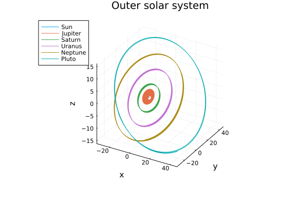

Simulating the Outer Solar System
Data
The chosen units are masses relative to the sun, meaning the sun has mass $1$. We have taken $m_0 = 1.00000597682$ to take account of the inner planets. Distances are in astronomical units, times in earth days, and the gravitational constant is thus $G = 2.95912208286 × 10^{-4}$.
| planet | mass | initial position | initial velocity |
|---|---|---|---|
| Jupiter | $m_1 = 0.000954786104043$ | [-3.5023653, -3.8169847, -1.5507963] | [0.00565429, -0.00412490, -0.00190589] |
| Saturn | $m_2 = 0.000285583733151$ | [9.0755314, -3.0458353, -1.6483708] | [0.00168318, 0.00483525, 0.00192462] |
| Uranus | $m_3 = 0.0000437273164546$ | [8.3101420, -16.2901086, -7.2521278] | [0.00354178, 0.00137102, 0.00055029] |
| Neptune | $m_4 = 0.0000517759138449$ | [11.4707666, -25.7294829, -10.8169456] | [0.00288930, 0.00114527, 0.00039677] |
| Pluto | $m_5 = 1/(1.3 × 10^8)$ | [-15.5387357, -25.2225594, -3.1902382] | [0.00276725, -0.00170702, -0.00136504] |
The data is taken from the book “Geometric Numerical Integration” by E. Hairer, C. Lubich and G. Wanner.
import OrdinaryDiffEq as ODE
using ModelingToolkit: System, t_nounits as t, D_nounits as D, @mtkbuild, @variables
using Symbolics: gradient
using Plots: plot, plot!
G = 2.95912208286e-4
M = [
1.00000597682,
9.54786104043e-4,
2.85583733151e-4,
4.37273164546e-5,
5.17759138449e-5,
1 / 1.3e8,
]
planets = ["Sun", "Jupiter", "Saturn", "Uranus", "Neptune", "Pluto"]
pos = [
0.0 -3.5023653 9.0755314 8.310142 11.4707666 -15.5387357
0.0 -3.8169847 -3.0458353 -16.2901086 -25.7294829 -25.2225594
0.0 -1.5507963 -1.6483708 -7.2521278 -10.8169456 -3.1902382
]
vel = [
0.0 0.00565429 0.00168318 0.00354178 0.0028893 0.00276725
0.0 -0.0041249 0.00483525 0.00137102 0.00114527 -0.00170702
0.0 -0.00190589 0.00192462 0.00055029 0.00039677 -0.00136504
]
tspan = (0.0, 200_000.0)(0.0, 200000.0)The N-body problem's Hamiltonian is
\[H(p,q) = \frac{1}{2} ∑_{i=0}^N \frac{p_i^T p_i}{m_i} - G ∑_{i=1}^N ∑_{j=0}^{i-1} \frac{m_i m_j}{\left\| q_i - q_j \right\|}\]
where each $q_i$ and $p_i$ is a 3-dimensional vector describing the planet's position and momentum, respectively.
Here, we want to solve for the motion of the five outer planets relative to the sun, namely, Jupiter, Saturn, Uranus, Neptune, and Pluto.
const ∑ = sum
const N = 6
@variables u(t)[1:3, 1:N]
u = collect(u)
potential = -G *
∑(
i -> ∑(j -> (M[i] * M[j]) / √(∑(k -> (u[k, i] - u[k, j])^2, 1:3)), 1:(i - 1)),
2:N
)\[ \begin{equation} - 0.00029591 ~ \left( \frac{3.3636 \cdot 10^{-13}}{\sqrt{\left( - u\_{1,4}\left( t \right) + u\_{1,6}\left( t \right) \right)^{2} + \left( - u\_{2,4}\left( t \right) + u\_{2,6}\left( t \right) \right)^{2} + \left( - u\_{3,4}\left( t \right) + u\_{3,6}\left( t \right) \right)^{2}}} + \frac{3.9828 \cdot 10^{-13}}{\sqrt{\left( - u\_{1,5}\left( t \right) + u\_{1,6}\left( t \right) \right)^{2} + \left( - u\_{2,5}\left( t \right) + u\_{2,6}\left( t \right) \right)^{2} + \left( - u\_{3,5}\left( t \right) + u\_{3,6}\left( t \right) \right)^{2}}} + \frac{2.1968 \cdot 10^{-12}}{\sqrt{\left( - u\_{1,3}\left( t \right) + u\_{1,6}\left( t \right) \right)^{2} + \left( - u\_{2,3}\left( t \right) + u\_{2,6}\left( t \right) \right)^{2} + \left( - u\_{3,3}\left( t \right) + u\_{3,6}\left( t \right) \right)^{2}}} + \frac{7.3445 \cdot 10^{-12}}{\sqrt{\left( - u\_{1,2}\left( t \right) + u\_{1,6}\left( t \right) \right)^{2} + \left( - u\_{2,2}\left( t \right) + u\_{2,6}\left( t \right) \right)^{2} + \left( - u\_{3,2}\left( t \right) + u\_{3,6}\left( t \right) \right)^{2}}} + \frac{2.264 \cdot 10^{-9}}{\sqrt{\left( - u\_{1,4}\left( t \right) + u\_{1,5}\left( t \right) \right)^{2} + \left( - u\_{2,4}\left( t \right) + u\_{2,5}\left( t \right) \right)^{2} + \left( - u\_{3,4}\left( t \right) + u\_{3,5}\left( t \right) \right)^{2}}} + \frac{7.6924 \cdot 10^{-9}}{\sqrt{\left( - u\_{1,1}\left( t \right) + u\_{1,6}\left( t \right) \right)^{2} + \left( - u\_{2,1}\left( t \right) + u\_{2,6}\left( t \right) \right)^{2} + \left( - u\_{3,1}\left( t \right) + u\_{3,6}\left( t \right) \right)^{2}}} + \frac{1.2488 \cdot 10^{-8}}{\sqrt{\left( - u\_{1,3}\left( t \right) + u\_{1,4}\left( t \right) \right)^{2} + \left( - u\_{2,3}\left( t \right) + u\_{2,4}\left( t \right) \right)^{2} + \left( - u\_{3,3}\left( t \right) + u\_{3,4}\left( t \right) \right)^{2}}} + \frac{1.4786 \cdot 10^{-8}}{\sqrt{\left( - u\_{1,3}\left( t \right) + u\_{1,5}\left( t \right) \right)^{2} + \left( - u\_{2,3}\left( t \right) + u\_{2,5}\left( t \right) \right)^{2} + \left( - u\_{3,3}\left( t \right) + u\_{3,5}\left( t \right) \right)^{2}}} + \frac{4.175 \cdot 10^{-8}}{\sqrt{\left( - u\_{1,2}\left( t \right) + u\_{1,4}\left( t \right) \right)^{2} + \left( - u\_{2,2}\left( t \right) + u\_{2,4}\left( t \right) \right)^{2} + \left( - u\_{3,2}\left( t \right) + u\_{3,4}\left( t \right) \right)^{2}}} + \frac{4.9435 \cdot 10^{-8}}{\sqrt{\left( - u\_{1,2}\left( t \right) + u\_{1,5}\left( t \right) \right)^{2} + \left( - u\_{2,2}\left( t \right) + u\_{2,5}\left( t \right) \right)^{2} + \left( - u\_{3,2}\left( t \right) + u\_{3,5}\left( t \right) \right)^{2}}} + \frac{2.7267 \cdot 10^{-7}}{\sqrt{\left( - u\_{1,2}\left( t \right) + u\_{1,3}\left( t \right) \right)^{2} + \left( - u\_{2,2}\left( t \right) + u\_{2,3}\left( t \right) \right)^{2} + \left( - u\_{3,2}\left( t \right) + u\_{3,3}\left( t \right) \right)^{2}}} + \frac{4.3728 \cdot 10^{-5}}{\sqrt{\left( - u\_{1,1}\left( t \right) + u\_{1,4}\left( t \right) \right)^{2} + \left( - u\_{2,1}\left( t \right) + u\_{2,4}\left( t \right) \right)^{2} + \left( - u\_{3,1}\left( t \right) + u\_{3,4}\left( t \right) \right)^{2}}} + \frac{5.1776 \cdot 10^{-5}}{\sqrt{\left( - u\_{1,1}\left( t \right) + u\_{1,5}\left( t \right) \right)^{2} + \left( - u\_{2,1}\left( t \right) + u\_{2,5}\left( t \right) \right)^{2} + \left( - u\_{3,1}\left( t \right) + u\_{3,5}\left( t \right) \right)^{2}}} + \frac{0.00028559}{\sqrt{\left( - u\_{1,1}\left( t \right) + u\_{1,3}\left( t \right) \right)^{2} + \left( - u\_{2,1}\left( t \right) + u\_{2,3}\left( t \right) \right)^{2} + \left( - u\_{3,1}\left( t \right) + u\_{3,3}\left( t \right) \right)^{2}}} + \frac{0.00095479}{\sqrt{\left( - u\_{1,1}\left( t \right) + u\_{1,2}\left( t \right) \right)^{2} + \left( - u\_{2,1}\left( t \right) + u\_{2,2}\left( t \right) \right)^{2} + \left( - u\_{3,1}\left( t \right) + u\_{3,2}\left( t \right) \right)^{2}}} \right) \end{equation} \]
Hamiltonian System
NBodyProblem constructs a second order ODE problem under the hood. We know that a Hamiltonian system has the form of
\[\dot{p} = -\frac{∂H}{∂q}, \quad \dot{q} = \frac{∂H}{∂p}\]
For an N-body system, we can simplify this as:
\[\dot{p} = -∇ V(q), \quad \dot{q} = M^{-1} p.\]
Thus, $\dot{q}$ is defined by the masses. We only need to define $\dot{p}$, and this is done internally by taking the gradient of $V$. Therefore, we only need to pass the potential function and the rest is taken care of.
eqs = vec(@. D(D(u))) .~ .-gradient(potential, vec(u)) ./ repeat(M, inner = 3)
@mtkbuild sys = System(eqs, t)
prob = ODE.ODEProblem(sys, [vec(u .=> pos); vec(D.(u) .=> vel)], tspan)
sol = ODE.solve(prob, ODE.Tsit5());retcode: Success
Interpolation: specialized 4th order "free" interpolation
t: 862-element Vector{Float64}:
0.0
0.4345623854592078
38.42800958855324
179.80033220007846
386.8797204296857
620.101485707046
891.2173632215191
1228.969574146376
1589.5373742814184
1964.1255658111818
⋮
199474.03961480287
199545.0451662182
199620.58790918151
199690.18336772927
199765.20680071507
199831.5796788454
199904.4796759019
199973.8299024321
200000.0
u: 862-element Vector{Vector{Float64}}:
[-3.1902382, -10.8169456, -7.2521278, -1.6483708, -1.5507963, 0.0, -25.2225594, -25.7294829, -16.2901086, -3.0458353 … 0.00137102, 0.00483525, -0.0041249, 0.0, 0.00276725, 0.0028893, 0.00354178, 0.00168318, 0.00565429, 0.0]
[-3.190831391666314, -10.816773167663484, -7.251888638015288, -1.6475343823037847, -1.5516242540172815, -2.777762988623252e-10, -25.223301179998256, -25.728985182525822, -16.289512746418094, -3.0437339894169093 … 0.0013712954942851254, 0.004835677090231295, -0.004121794983806699, -3.1048711440018414e-9, 0.002767325672882192, 0.0028892462117755886, 0.0035416394156575887, 0.0016819059109041002, 0.005657137663985553, -2.346105131364385e-9]
[-3.2426674617597975, -10.801612391889028, -7.230773121528675, -1.5740240609775202, -1.6218565058602112, -2.205005287609366e-6, -25.287947973177943, -25.685267600339646, -16.23695558132949, -2.859314419439165 … 0.0013953316300285713, 0.004871931420755098, -0.0038441951510034557, -2.801020653923454e-7, 0.002773917219125897, 0.00288452060025379, 0.0035292532073605775, 0.0015699448543169702, 0.0058988005050198905, -2.0032075004731156e-7]
[-3.4350813427899682, -10.743723835218576, -7.1486508813998055, -1.2942926276955724, -1.8429722957040413, -5.0809123133287916e-5, -25.52489986794263, -25.51908735719576, -16.033418248544177, -2.162022158176559 … 0.0014838846237610604, 0.004987564118656582, -0.002712963072779866, -1.3990977835610278e-6, 0.0027980172409057826, 0.002866539075158666, 0.0034815275398827083, 0.0011440745416195011, 0.006661465849479506, -8.038600421143275e-7]
[-3.7155306082363886, -10.65474964269346, -7.018388447649522, -0.8697610976795668, -2.037535861660812, -0.0002503532492574125, -25.86168293525916, -25.26574204532401, -15.712921143323623, -1.116383550534719 … 0.0016109924503791874, 0.0050997339261155735, -0.0008339317304706525, -3.233691728904031e-6, 0.002832092928950202, 0.002839074244230699, 0.003407045667943442, 0.0004978310866563055, 0.00733484856843593, -1.2575585278260073e-6]
[-4.029256669426023, -10.548637739948704, -6.857795955135175, -0.37708851538930965, -2.0496494290772507, -0.0006778070362969581, -26.22619605774967, -24.9664104694701, -15.320880022671343, 0.07950876271910137 … 0.0017502650213556971, 0.005140093192311161, 0.0014468915139135158, -5.432269852449012e-6, 0.002868705070918224, 0.0028065535159252945, 0.003316837932698173, -0.0002527129324267949, 0.007363140006859527, -1.064600739525531e-6]
[-4.390895163998917, -10.417496668062498, -6.653145744772235, 0.20369338787277028, -1.775705075310895, -0.0014532060704238934, -26.630057012029095, -24.60001149686819, -14.825011317728203, 1.4660907329658384 … 0.0019067156271325453, 0.005066590871857763, 0.004009038360707281, -7.868169033258815e-6, 0.0029088856596144485, 0.0027666575441337832, 0.003203873427767735, -0.0011387135189000373, 0.0063343130181833, 1.7773387854756302e-7]
[-4.836417660087463, -10.242553630443485, -6.372170520107368, 0.9179399740334161, -1.0470296763724714, -0.0027881543283179325, -27.102991462630897, -24.11624034989031, -14.149288358510063, 3.1361188780429567 … 0.002092922711874396, 0.004787493465981244, 0.006426663661143364, -1.0109516505698338e-5, 0.0029553219468415643, 0.002713854948731631, 0.0030515514652339234, -0.002229502176551114, 0.003548217191922442, 3.158747314030488e-6]
[-5.305372488183101, -10.041845917210845, -6.04184498232023, 1.6376867910794595, 0.023297528304421035, -0.004482327467424465, -27.57056938635073, -23.56695146171471, -13.360489043684222, 4.774168286978543 … 0.002280389081153769, 0.004259384043363484, 0.007236280651100511, -1.0744721805607927e-5, 0.003000426103412304, 0.0026537498264385413, 0.002875565520771061, -0.003326787915667766, -0.0005934758771641914, 7.437326732780378e-6]
[-5.784649084963304, -9.81836512464259, -5.667385641627968, 2.300672264401266, 1.120599745730379, -0.006206336283793311, -28.015216003108673, -22.961173569685105, -12.47183095537358, 6.229480802889003 … 0.0024620512140220924, 0.0034724402895027606, 0.005738090409130523, -9.10237610346932e-6, 0.003042375484124029, 0.0025872965276415604, 0.002679081228236022, -0.004328545325237838, -0.004747176842152622, 1.1701314918571872e-5]
⋮
[-15.122973484273913, 7.44026521630771, 7.074371355545375, -0.3322326171787287, -0.24437731222749862, -0.24764519256014655, -14.87440991823309, 19.547557531088856, 16.067391750477338, -1.6916539701904196 … -0.0011632032191685074, -0.005127306743303826, 0.013405421020519294, -1.382660138400884e-5, 0.0017129774438184881, -0.0022736999391036656, -0.0038055474203582337, 0.0003710423800687346, -0.0008141161950987438, 7.139232901406356e-6]
[-15.113350180924076, 7.502555975168105, 7.041171924313601, -0.4837846815302624, 0.1251805438787093, -0.24804354760375127, -14.72690890187728, 19.68989650854807, 15.98293786616275, -2.054594302530527 … -0.001215566290424519, -0.005094149412581369, 0.009025324248713168, -9.65092248307236e-6, 0.0017018105055964768, -0.0022900688230857637, -0.0037891154152022376, 0.0005985010758233882, -0.01075788508299834, 1.6568519469105072e-5]
[-15.102737673419668, 7.56834666927758, 7.0040482988653485, -0.6445743615618867, 0.28488395792012156, -0.24824446948054166, -14.569624403817244, 19.84007976952063, 15.889012215743511, -2.4377985483507234 … -0.001271089471550705, -0.005049643156498023, -0.0012160601812858359, 1.1795541225597747e-7, 0.0016899307657006514, -0.0023073412828032956, -0.0037706569992389583, 0.0008377209307531679, -0.014709143780893637, 2.0272874179631293e-5]
[-15.092620619257266, 7.628515974900511, 6.968207105317211, -0.792041408029922, 0.12567592597069777, -0.24813718244203853, -14.424400202419406, 19.977289929261193, 15.798775499421371, -2.7875623765267368 … -0.001322058351608775, -0.0050003941666163605, -0.010372700963339147, 8.84952370234236e-6, 0.0016789872281519408, -0.0023231228998180785, -0.0037527624349509804, 0.0010552311993861877, -0.009860573983859068, 1.558147246863729e-5]
[-15.081350843751915, 7.692899609316909, 6.927814322957108, -0.950020520814131, -0.2778023249823584, -0.24780033995432316, -14.267508312318334, 20.123957980333056, 15.697535648340741, -3.1604485756579606 … -0.0013767896740147748, -0.0049386557721146414, -0.013700150748144539, 1.2012162835958111e-5, 0.0016671915217191854, -0.002339993648076836, -0.003732518140880124, 0.0012862673293854347, 0.0017179614785162625, 4.460522371902556e-6]
[-15.071067286604627, 7.749442467000293, 6.890564965862289, -1.0887038731615808, -0.6265920498861448, -0.24751035397171822, -14.128415811891541, 20.252631621347668, 15.604552713373279, -3.4862242514229926 … -0.0014250139666782404, -0.004876750040588263, -0.00892914650670879, 7.442126773030574e-6, 0.0016567573702455088, -0.0023547958081592867, -0.0037137831589622496, 0.0014873970603478121, 0.01135947895436847, -4.802501306774825e-6]
[-15.059435014941194, 7.811091126099731, 6.848020470325888, -1.239615817044719, -0.7733407513532446, -0.2474178121749225, -13.97533465601682, 20.392779657038325, 15.498745291339828, -3.8390294706203956 … -0.0014777557410461247, -0.0048010839733555995, 0.0015191435482820358, -2.552118739067536e-6, 0.0016452989402142512, -0.0023709192488088828, -0.0036923147108635, 0.0017044466512770194, 0.014828912944871606, -8.177138196268954e-6]
[-15.048042670356786, 7.86929290081292, 6.805967876863448, -1.3815864038710206, -0.6068456996592814, -0.24762239575407277, -13.829410363177681, 20.52495005044049, 15.394529504058236, -4.169278284079627 … -0.0015276978253379112, -0.004721840295026818, 0.010471262669024855, -1.1119031065408961e-5, 0.001634400447894858, -0.0023861260209123675, -0.0036710281920196873, 0.0019069059156219567, 0.009523276957002155, -3.1693830589032906e-6]
[-15.043661187094044, 7.891142586645206, 6.789699849405056, -1.4347121529785254, -0.4822449425182177, -0.2477586811031995, -13.774269720397294, 20.574532310324415, 15.354303628726406, -4.292436611233432 … -0.0015464825511053966, -0.004690138702537145, 0.012470393571656786, -1.3035674849162847e-5, 0.001630288336536012, -0.0023918309527483886, -0.003662777148046796, 0.0019822361307339307, 0.0059003648782272235, 2.6812403434863396e-7]plt = plot(xlab = "x", ylab = "y", zlab = "z", title = "Outer solar system")
for i in 1:N
plot!(plt, sol, idxs = (u[:, i]...,), lab = planets[i])
end
plt